Guia completo para acesso, uso do financeiro, cadastro de eventos/clientes e administração de alunas.
Endereço do sistema: https://eventos-omega-five.vercel.app/
Data do manual: 24/09/2026
Use estas contas para validar o sistema antes de liberar o uso definitivo.
E-mail: teste.shirley.eventos@teste.local
Senha: ShirleyTeste@2026
Acesso às telas de início, eventos, financeiro, clientes e configurações.
E-mail: admin.shirley.eventos@teste.local
Senha: ShirleyAdmin@2026
Acesso às telas administrativas de alunas, status de acesso e logs.
Observação: essas contas são para homologação/teste. Para uso real, o ideal é criar a conta final da Shirley com e-mail definitivo e trocar a senha inicial.
Entre pelo endereço https://eventos-omega-five.vercel.app/ usando e-mail e senha. Se os dados estiverem incorretos, o sistema mostra a mensagem de erro e mantém a pessoa na tela de login.
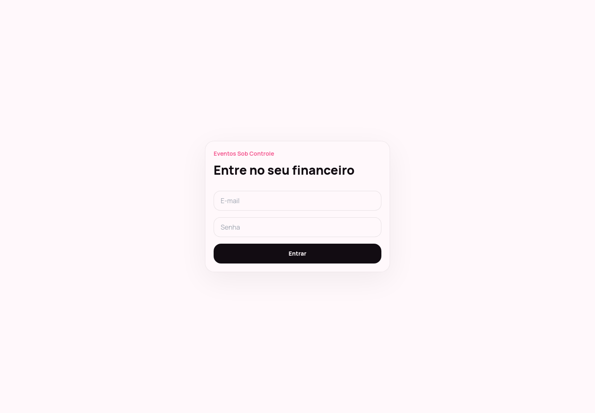
Quando e-mail ou senha estiverem incorretos, aparece o aviso: “E-mail ou senha incorretos. Confira os dados e tente novamente.”
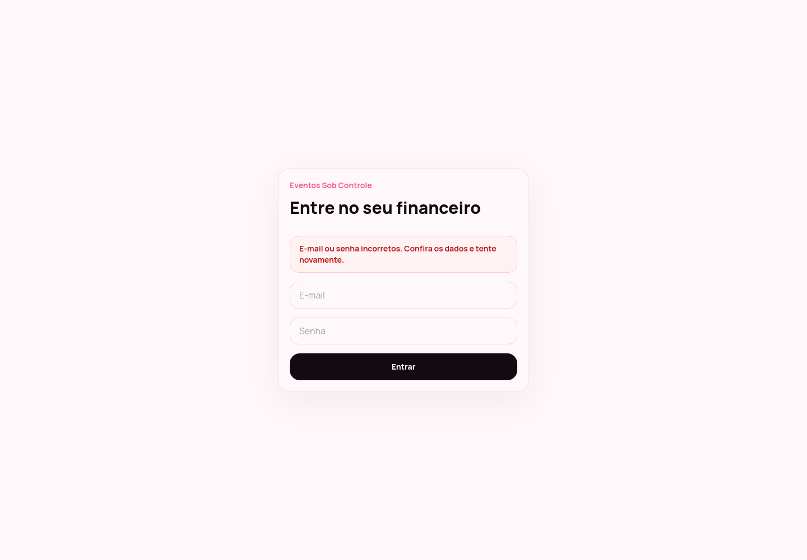
Mostra a visão geral do financeiro: vendido, recebido, a receber, resultado, quantidade de eventos, ticket médio, gráficos mensais e sugestão de distribuição do resultado.
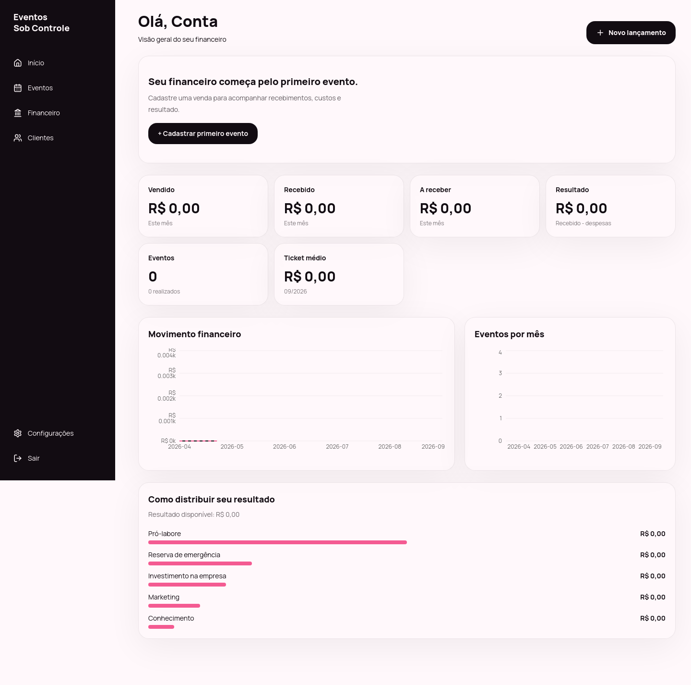
Lista os eventos cadastrados. Use esta tela para acompanhar vendas, status e histórico dos eventos.
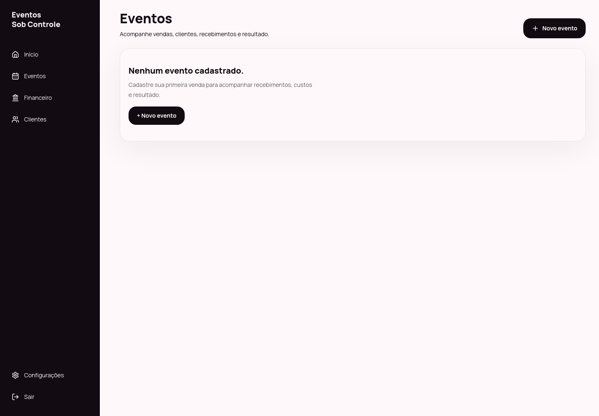
Cadastro de uma venda/evento. Informe cliente, serviço, data da venda, data do evento, valor e dados financeiros iniciais para o sistema calcular recebimentos e custos.
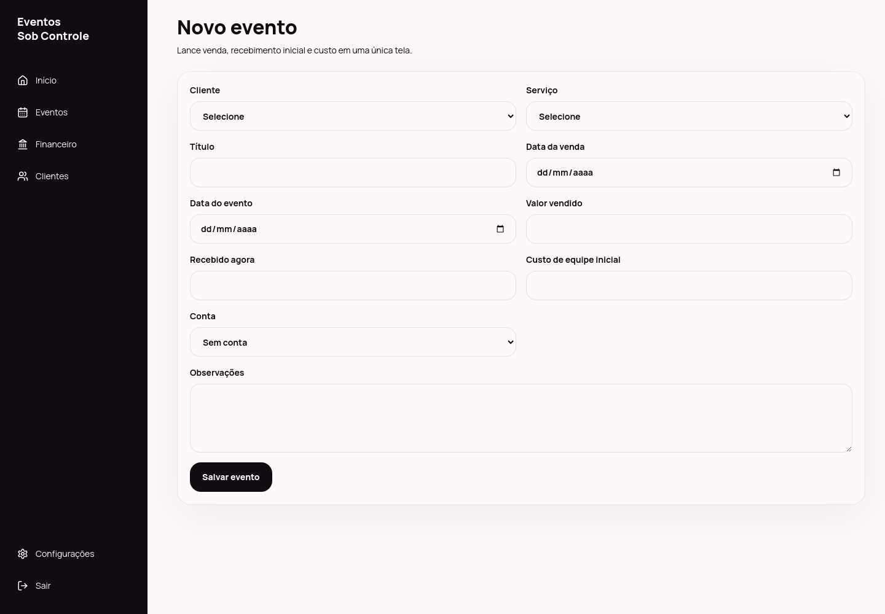
Cadastro e consulta de clientes. Os clientes são usados na criação dos eventos para manter o histórico organizado.
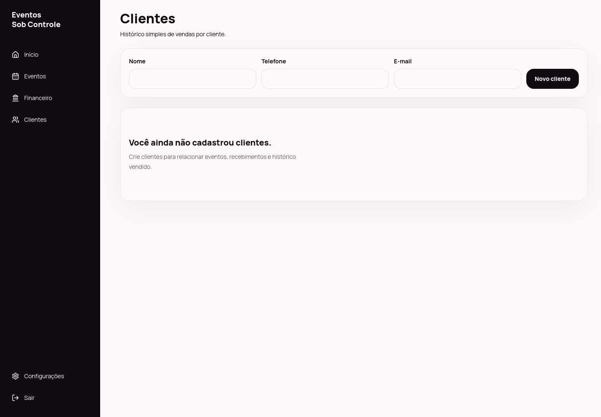
Registre recebimentos e despesas, consulte movimentações, cadastre contas/caixas e ajuste os percentuais de distribuição do resultado.
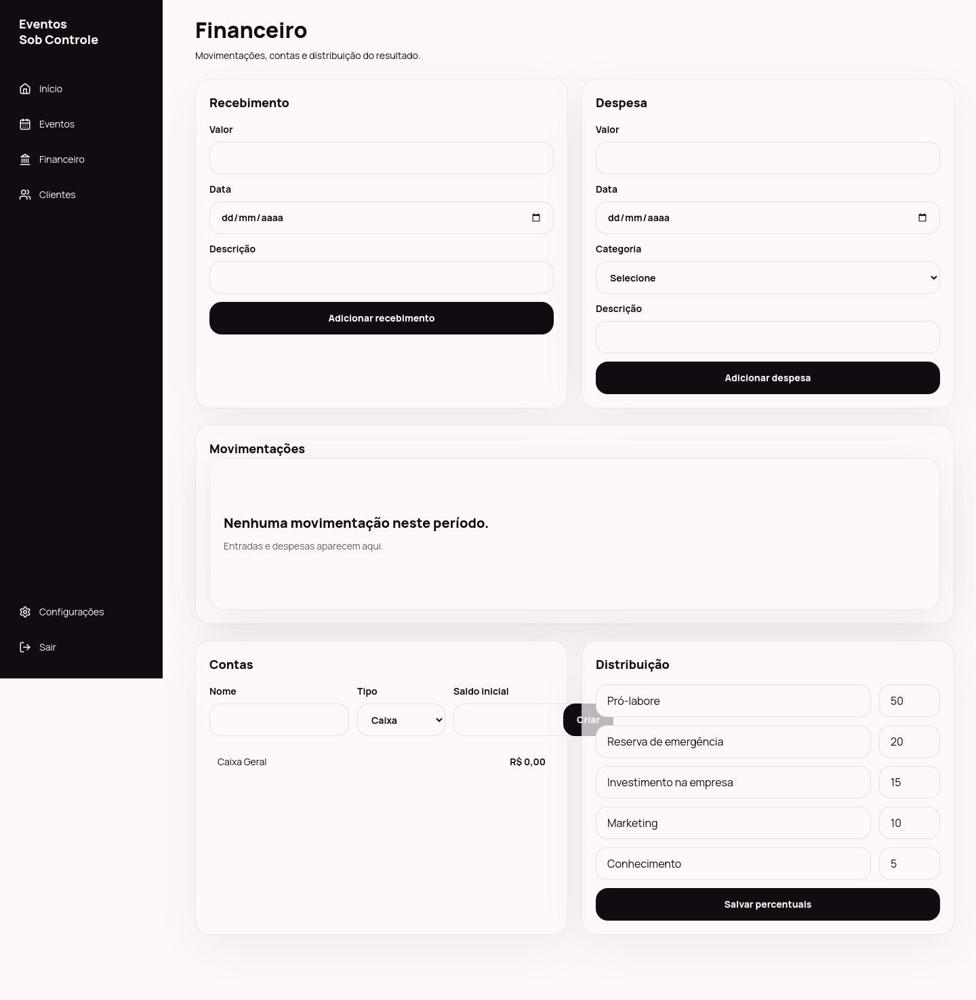
Área de ajustes da conta/workspace. No MVP, concentra informações básicas e preferências disponíveis para a aluna.
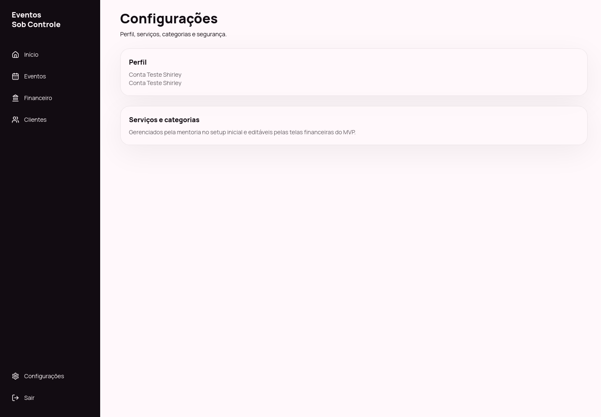
Painel administrativo com total de alunas, ativas, em carência, suspensas, novas no mês e últimos acessos.
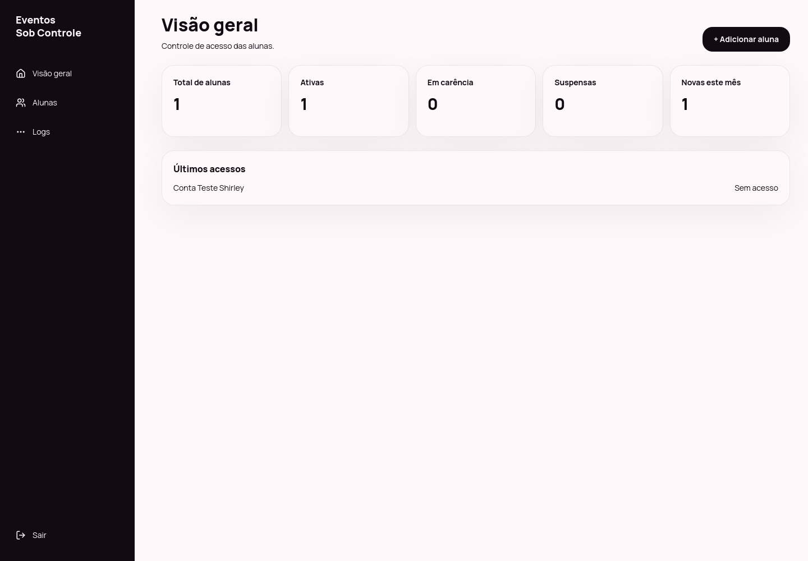
Lista de alunas com status, data de criação e último acesso. Clique em uma aluna para gerenciar o acesso.
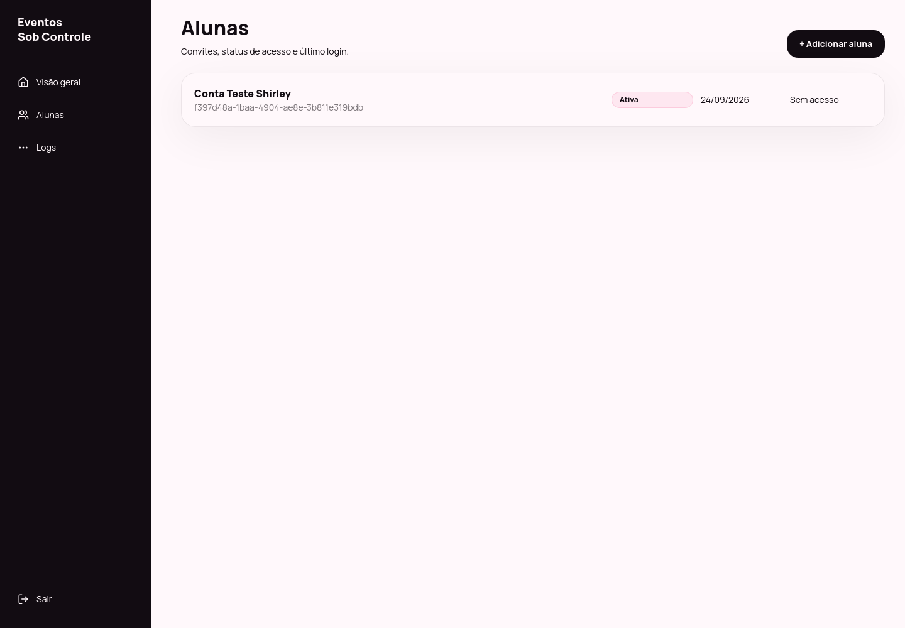
Cria convite para uma nova aluna. O sistema cria o workspace, perfil e estrutura financeira inicial.
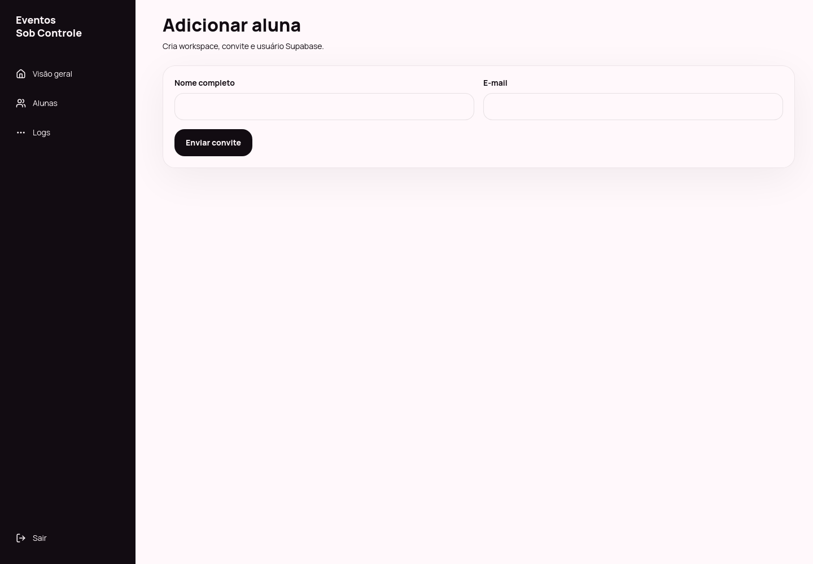
Permite alterar status de acesso: reativar, colocar em carência, suspender ou arquivar.
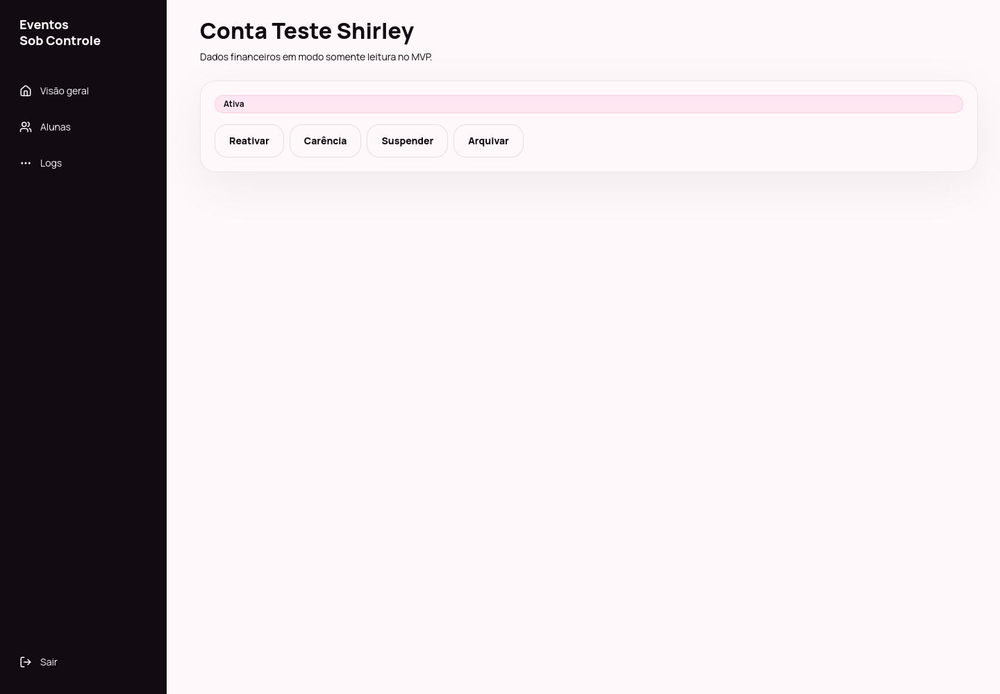
Registra ações administrativas importantes para auditoria.
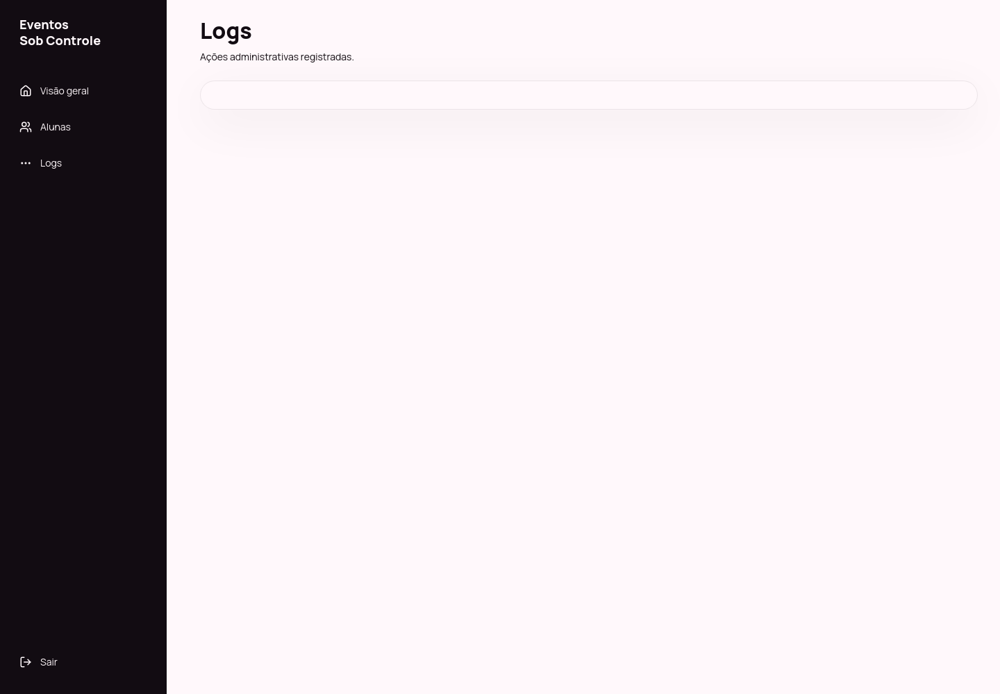
Manual gerado com screenshots do ambiente publicado em produção.